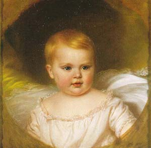
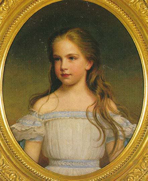
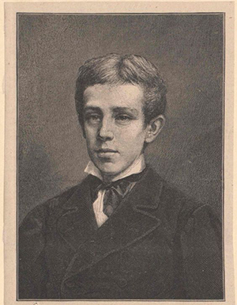
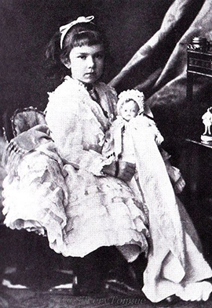

Archduchess Sophie of Austria
Archduchess Sophie of Austria (German: Sophie, Erzherzogin von Österreich; 5 March 1855 – 29 May 1857) was the first child and first of three daughters born to Franz Joseph I, Emperor of Austria, and Elisabeth of Bavaria. She died aged two.
Archduchess Gisela of Austria
Archduchess Gisela of Austria (Gisela Louise Marie; 12 July 1856 – 27 July 1932) was the second daughter and eldest surviving child of Emperor Franz Joseph I of Austria and Elisabeth of Bavaria.
Although christened Gisella (with a double L), after a 10th-century Habsburg ancestress, she only ever wrote her name with one L. Just like her older sister Archduchess Sophie (died 1857) and her brother Crown Prince Rudolf, Gisela was raised by her paternal grandmother, Princess Sophie of Bavaria. A sober nature like her father, she kept a reserved attitude towards her mother. She had a very close relationship with her brother, whose suicide hit her hard.
Rudolf, Crown Prince of Austria
Rudolf, Crown Prince of Austria (Rudolf Franz Karl Joseph; 21 August 1858 – 30 January 1889) was the only son of Emperor Franz Joseph I and Elisabeth of Bavaria. He was heir apparent to the throne of Austria-Hungary from birth. In 1889, he died in a suicide pact with his mistress, Baroness Mary Vetsera, at the Mayerling hunting lodge. The ensuing scandal made international headlines. He was named after the first Habsburg King of Germany, Rudolf I, who assumed the throne in 1273.
Rudolf's death plunged his mother into despair. She wore black or pearl grey, the colours of mourning, for the rest of her life and spent more and more time away from the imperial court in Vienna. Empress Elisabeth was murdered while abroad in Geneva, Switzerland in 1898 by an Italian anarchist, Luigi Lucheni.
Archduchess Marie Valerie of Austria
Archduchess Marie Valerie of Austria (22 April 1868 – 6 September 1924) was the fourth and last child of Franz Joseph I of Austria and Elisabeth of Bavaria. Her given name was Marie Valerie Mathilde Amalie, but she was usually called Valerie.
Princess Marie Valerie was born at Ofen (Buda) in Hungary. The Empress Elisabeth was especially attached to Valerie, who was born ten years after the imperial couple's third child, and whom she was allowed to raise herself in contrast to her first three children who were taken from her in infancy and raised by the Emperor's mother, Archduchess Sophie. Sophie herself wrote to Elisabeth's mother Ludovika, "Sisi is completely absorbed by her love and care for this irresistible little angel."